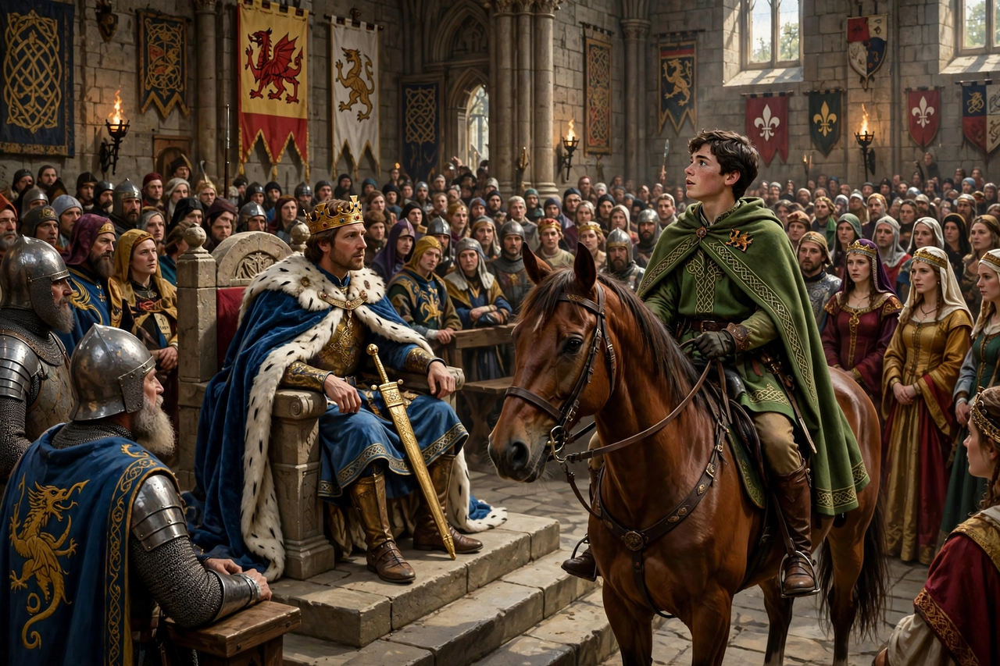

Culhwch and Olwen
Culhwch and Olwen (Welsh: Culhwch ac Olwen) is a Welsh tale of about 1100, one of the earliest Arthurian romances and the oldest surviving complete prose tale in Welsh. It is preserved in the White Book of Rhydderch and the Red Book of Hergest, and is included in modern editions of The Mabinogion, though it is not one of the Four Branches of the Mabinogi proper.

| Language | Middle Welsh |
|---|---|
| Date | c. 1100 |
| Protagonist | Culhwch, cousin of Arthur |
| Antagonist | Ysbaddaden Bencawr, chief giant |
| Genre | Arthurian tale, quest narrative |
Plot
Culhwch, whose mother dies after his birth — he is found as an infant among swine, hence his name, "pig-run" — is cursed by his stepmother to love no woman but Olwen, daughter of the giant Ysbaddaden Bencawr. Though he has never seen her, Culhwch falls desperately in love and rides to the court of his cousin King Arthur, where he invokes a magnificent catalogue of Arthur's warriors, servants, and their marvels as witnesses to his claim for aid.
Arthur's men — including Cai (later Sir Kay), Bedwyr (Bedivere), Gwalchmei (Gawain), and the enchanter Menw — accompany Culhwch to the giant's castle. Ysbaddaden, who knows he will die when his daughter marries, sets a list of some forty impossible tasks (anoethau), among them obtaining the blood of the Black Witch, the beard-clippers of Dillus, the harp of Teirtu, and the comb, razor, and scissors from between the ears of the monstrous boar Twrch Trwyth, needed to shave the giant for the wedding.
The tasks and the hunt
Many tasks are accomplished through the counsel of the Oldest Animals — the Blackbird of Cilgwri, the Stag of Rhedynfre, the Owl of Cwm Cowlyd, the Eagle of Gwernabwy, and the Salmon of Llyn Llyw, the oldest of all, who carries Arthur's men on his shoulders to Gloucester to rescue Mabon ap Modron, stolen from his mother at three nights old. The centrepiece is the great hunt of Twrch Trwyth across Wales and Ireland, in which the boar's comb and scissors are won and many warriors slain. Finally Goreu, whose brothers the giant had killed, cuts off Ysbaddaden's head, and Culhwch marries Olwen.
Significance
The tale offers the most vivid early picture of Arthur's court in Welsh tradition: a war-band of heroes each with a marvellous gift, rooted in older Celtic story. Its catalogue of some 260 named figures is a treasury of otherwise lost Welsh heroic tradition.
See also
References
- Bromwich, Rachel; Evans, D. Simon (eds.), Culhwch and Olwen: An Edition and Study, 1992.
- Davies, Sioned (trans.), The Mabinogion, Oxford World's Classics, 2007.